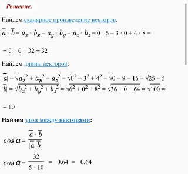
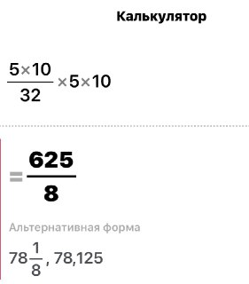

При повторній генерацій чисел в масиві, числа не повторюються. Знаходження парних та непарних індексів програма здійснює правильно, проте визначення максимального та мінімального значення потребує коретності, оскільки в деяких випадках видає два однакових значення. Сортування масиву за алгоритмом змішування виконує правильно - члени стоять в правильній послідовнсті зростання. Знаходження елемента виконується з виводом даного елемента масиву з його індексом, якщо заданого елемента немає в масиві виводить повідомлення про його відсутність.
Суму та різницю векторів програма обраховує правильно, можно порахувати усно. Скалярний добуток та косинус перевіряли за допомогою калькулятора.
Векторний добуток це вектор, який перпендикулярний двом іншим. За допомогою цих двох векторів можна визначити координати третього вектору(векторний добуток). Проте, щоб це визначити потрібно обраховувати матриці, тому наша програма розраховує векторний добуток по іншій формулі.
